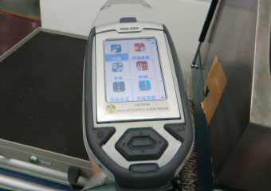
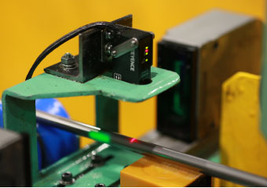
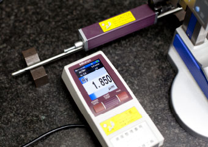

Quality management system品质管理体制
为了保证下村品牌确实可靠的品质，构建彻底完善的管理体制。除了各道制造工序都进行严格的品质检查之外，还添置了完善的高性能检测设备。拥有一套从所有层面确保品质的体制。
确保可靠放心的鉴定技术
火星检查（SUS420J2）
用磨床削磨钢材使之迸发火星，通过其颜色从形状进行材料鉴别。
异钢材辨别
在EC设备中的工艺流水线中装配了异钢材辨别装置。在检查产品缺陷的同时，还实施异钢材辨别，从而强化鉴定能力。
Ｘ线分析
引进Ｘ线分析装置实施成分分析，从而强化鉴定能力。
发光光谱分析
在进行异钢材辨别、Ｘ线分析鉴定之外，还更进一步地强化了鉴定能力。
保证安全的缺陷检测系统
超声波探伤仪(UT)
检查制品内部缺陷。
提供（株）KJTD
垂直∶SDHφ0.5×10mm以上 斜角∶FBHφ0.5以上
EC旋转式
EC贯通式
提供日本FOERSTER（株）
独自开发的品质管理仪器
CG圆形度监视器
在CG工艺流水线中实施真圆度测量，构建了可早期发现不良产品的机制。
WD局部扭曲检测器

在WD工艺流水线中检查出线圈的局部扭曲，构建了可早期发现不良产品的机制。
CM局部变细检测器

在CM工艺流水线中检查出局部变细，以防止不良产品出厂。
充实的高性能检测设备
高笔直产品
短距离跳动测量仪
我们拥有可满足严格的高笔直技术水平。
【品质事例】
φ7 ≦0.02mm/150mm
φ5 ≦0.02mm/255mm
φ3 ≦0.01mm/50mm
自动圆筒度测量仪
我们拥有可满足比标准规格（公差的1/2）更严格的圆筒度技术水平。
【品质事例】
φ10（0,-10）≦4μm
高圆度产品
圆度测量仪
我们拥有可满足比标准规格(公差的1/3)真圆度技术水平。
【品质事例】
φ6(+6,+2) ≦1.3μm
研磨品表面粗糙度的高管理制品
表面粗糙度测量仪我们拥有可满足比标准规格（Ry≦3.2μm）更严格的表面粗糙度管理水平。
【品质事例】
φ2 Ry≦1.6μm
窄幅公差制品
尺寸测量仪
对于拉伸制品，我们拥有可满足比标准规格(h9) 更严格的公差应对技术水平。
【品质事例】
φ10 0.010mm / φ1 0.010mm
对于研磨制品，我们拥有可满足比标准规格(h7) 更严格的公差应对技术水平。
【品质事例】
φ6 0.004mm